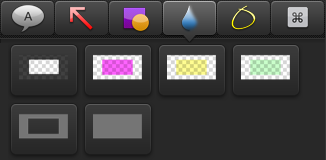

Blur video content:
- Click the Annotations tab.
- Click to select the blur animation. The styles appear below.

- Drag the blur annotation onto the canvas or timeline. Make sure the blur annotation is on the track above the item to blur on the timeline.
- To move the blur annotation, click within the annotation and drag it to a new position on the canvas.
- To resize the blur annotation, click to select the annotation on the canvas. Drag one of the annotation handles in or out.
- To edit the blur properties, click the Properties button
 .
.
- To change the duration the blur appears in the video, click to select the annotation on the timeline. Drag either end in or out to adjust the duration.
See also
Mask a clip
 Mask or blur sensitive video content
Mask or blur sensitive video content